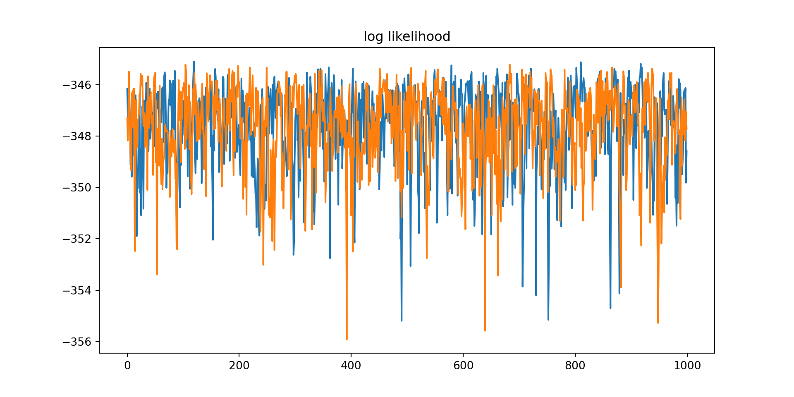
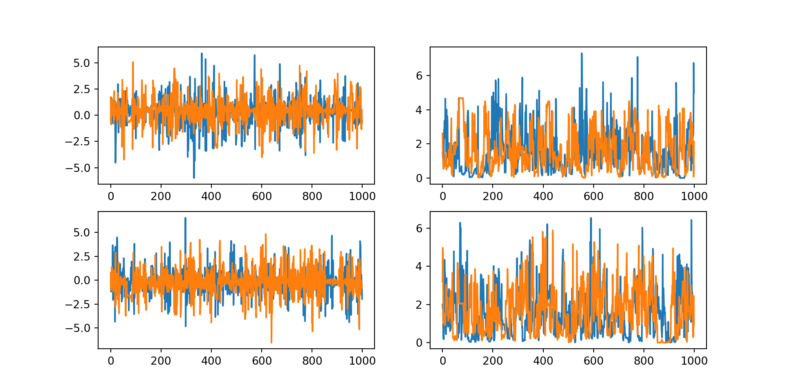
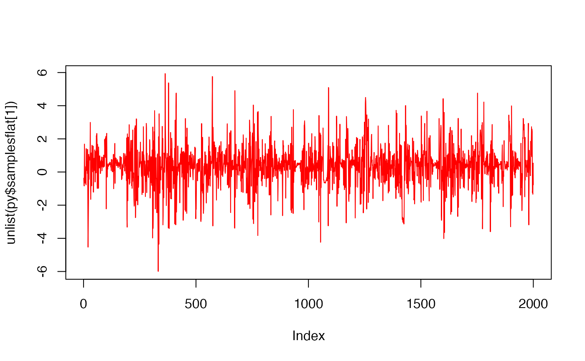

my-vignette-test
my-vignette-test.RmdDataset
### Prepare model inputs
set.seed(9999)
# Set up data
rr_k_ctrl <- c(0.60) # control response rate for each basket
rr_k_trt <- c(0.58) # treatment response rate for each basket
K<-length(rr_k_ctrl) # number of baskets
N_k_ctrl <- rep(250, K) # number of control participants per basket
N_k_trt <- rep(250, K) # number of treatment participants per basket
N_k <- N_k_ctrl + N_k_trt # number of participants per basket (both arms combined)
N <- sum(N_k) # total sample size
k_vec <- rep(1:K, N_k) # N x 1 vector of basket indicators (1 to K)
z_vec<-NULL;
y<-NULL;
for(i in 1:K){ # for each basket repeat 0-control 1-trt inside this according to the specifc Ns
z_vec<-c(z_vec,rep(0:1,c(N_k_ctrl[i],N_k_trt[i]))) # treatment/control indicator
y<-c(y,
c(rbinom(N_k_ctrl[i],1,rr_k_ctrl[i]), # bernoulli for control
rbinom(N_k_trt[i],1,rr_k_trt[i]))) # for trt
}
thedata<-data.frame(y,basketID=k_vec,Treatment=z_vec)
knitr::kable(head(thedata)) | y | basketID | Treatment |
|---|---|---|
| 0 | 1 | 0 |
| 0 | 1 | 0 |
| 0 | 1 | 0 |
| 1 | 1 | 0 |
| 0 | 1 | 0 |
| 0 | 1 | 0 |
py$thedata<-r_to_py(thedata) # to ensure correct form to python2. Fit Bayesian Model in Tensorflow - One basket, control/test, binary endpoint
This runs python via reticulate with dependencies previously installed as part of the package. Note that the dataset created above has already been passed to python via reticulate r_to_py() function, and it is accessible as a pandas data.frame inside python chunks.
import matplotlib.pyplot as plt
import seaborn as sns
import numpy as np
import pandas as pd
import os
#os.environ["KERAS_BACKEND"] = "jax"
import keras
#import bash
import tensorflow as tf
import tensorflow_probability as tfp
from tensorflow_probability import distributions as tfd
tfb = tfp.bijectors
import warnings
import time
import sys
print(sys.version)
#> 3.11.14 (main, Oct 26 2025, 13:36:28) [Clang 17.0.0 (clang-1700.3.19.1)]
print(sys.executable)
#> /Users/work/.virtualenvs/r-tensorflow/bin/python
print(f"TensorFlow version: {tf.__version__}")
#> TensorFlow version: 2.20.0
print(f"TensorFlow Probability version: {tfp.__version__}")
#> TensorFlow Probability version: 0.25.0
print(f" rows={thedata.shape[0]} cols={thedata.shape[1]}")
#> rows=500 cols=3
y_data=tf.convert_to_tensor(thedata.iloc[:,0], dtype = tf.float32)
k_vec=tf.convert_to_tensor(thedata.iloc[:,1], dtype = tf.float32)
z_vec=tf.convert_to_tensor(thedata.iloc[:,2], dtype = tf.float32)
print(f"y={z_vec}")
#> y=[0. 0. 0. 0. 0. 0. 0. 0. 0. 0. 0. 0. 0. 0. 0. 0. 0. 0. 0. 0. 0. 0. 0. 0.
#> 0. 0. 0. 0. 0. 0. 0. 0. 0. 0. 0. 0. 0. 0. 0. 0. 0. 0. 0. 0. 0. 0. 0. 0.
#> 0. 0. 0. 0. 0. 0. 0. 0. 0. 0. 0. 0. 0. 0. 0. 0. 0. 0. 0. 0. 0. 0. 0. 0.
#> 0. 0. 0. 0. 0. 0. 0. 0. 0. 0. 0. 0. 0. 0. 0. 0. 0. 0. 0. 0. 0. 0. 0. 0.
#> 0. 0. 0. 0. 0. 0. 0. 0. 0. 0. 0. 0. 0. 0. 0. 0. 0. 0. 0. 0. 0. 0. 0. 0.
#> 0. 0. 0. 0. 0. 0. 0. 0. 0. 0. 0. 0. 0. 0. 0. 0. 0. 0. 0. 0. 0. 0. 0. 0.
#> 0. 0. 0. 0. 0. 0. 0. 0. 0. 0. 0. 0. 0. 0. 0. 0. 0. 0. 0. 0. 0. 0. 0. 0.
#> 0. 0. 0. 0. 0. 0. 0. 0. 0. 0. 0. 0. 0. 0. 0. 0. 0. 0. 0. 0. 0. 0. 0. 0.
#> 0. 0. 0. 0. 0. 0. 0. 0. 0. 0. 0. 0. 0. 0. 0. 0. 0. 0. 0. 0. 0. 0. 0. 0.
#> 0. 0. 0. 0. 0. 0. 0. 0. 0. 0. 0. 0. 0. 0. 0. 0. 0. 0. 0. 0. 0. 0. 0. 0.
#> 0. 0. 0. 0. 0. 0. 0. 0. 0. 0. 1. 1. 1. 1. 1. 1. 1. 1. 1. 1. 1. 1. 1. 1.
#> 1. 1. 1. 1. 1. 1. 1. 1. 1. 1. 1. 1. 1. 1. 1. 1. 1. 1. 1. 1. 1. 1. 1. 1.
#> 1. 1. 1. 1. 1. 1. 1. 1. 1. 1. 1. 1. 1. 1. 1. 1. 1. 1. 1. 1. 1. 1. 1. 1.
#> 1. 1. 1. 1. 1. 1. 1. 1. 1. 1. 1. 1. 1. 1. 1. 1. 1. 1. 1. 1. 1. 1. 1. 1.
#> 1. 1. 1. 1. 1. 1. 1. 1. 1. 1. 1. 1. 1. 1. 1. 1. 1. 1. 1. 1. 1. 1. 1. 1.
#> 1. 1. 1. 1. 1. 1. 1. 1. 1. 1. 1. 1. 1. 1. 1. 1. 1. 1. 1. 1. 1. 1. 1. 1.
#> 1. 1. 1. 1. 1. 1. 1. 1. 1. 1. 1. 1. 1. 1. 1. 1. 1. 1. 1. 1. 1. 1. 1. 1.
#> 1. 1. 1. 1. 1. 1. 1. 1. 1. 1. 1. 1. 1. 1. 1. 1. 1. 1. 1. 1. 1. 1. 1. 1.
#> 1. 1. 1. 1. 1. 1. 1. 1. 1. 1. 1. 1. 1. 1. 1. 1. 1. 1. 1. 1. 1. 1. 1. 1.
#> 1. 1. 1. 1. 1. 1. 1. 1. 1. 1. 1. 1. 1. 1. 1. 1. 1. 1. 1. 1. 1. 1. 1. 1.
#> 1. 1. 1. 1. 1. 1. 1. 1. 1. 1. 1. 1. 1. 1. 1. 1. 1. 1. 1. 1.]def make_observed_dist(log_odd_control_and_ratio,sigma1, mu1,sigma0,mu0):
beta=tf.stack([mu0 + sigma0 * log_odd_control_and_ratio[0],
mu1 + sigma1 * log_odd_control_and_ratio[1]])
return(tfd.Independent(
tfd.Bernoulli(logits=beta[0]+beta[1]*z_vec),
reinterpreted_batch_ndims = 1
))
# model is y[i] = Bernoulli(p[i]) where logit(p[i]) = intercept + treatment*z[i]
model = tfd.JointDistributionSequentialAutoBatched([
tfd.Normal(loc=0., scale=2.5, name="mu0"), # `mu_b` stan above
tfd.HalfNormal(scale=2.5, name="sigma0"), # `tau_b` stan above
tfd.Normal(loc=0., scale=2.5, name="mu1"), # `mu` stan above
tfd.HalfNormal(scale=2.5, name="sigma1"), # `tau` stan above
tfd.Normal(loc=tf.zeros(2), scale=tf.ones(2), name="log_odd_control_and_ratio"), ## indep norms, vector
make_observed_dist
])
def log_prob_fn(mu0, sigma0, mu1,sigma1, log_odd_control_and_ratio):
"""Unnormalized target density as a function of states."""
return model.log_prob((
mu0, sigma0, mu1,sigma1, log_odd_control_and_ratio,y_data))
Define the MCMC sampler for Tensorflow
Use a No-u-turn sampler with dual step size adaptation, no-u-turn is HMC-based and so needs bijectors defined to project into unconstrained space.
Step-size Adaptation
To allow step size to separately adapt for each parameter and in each chain, then the step-size vector must be passed in a specific structure, and the same structure as the initial values. The general structure is the outer dimension should be for the chain, and the rest of the structure needs to map into the state variable structure.
# this is to allow step size to be separately adapted for each parameter in the model
steps=[tf.constant([0.5]),
tf.constant([0.05]),
tf.constant([0.5]),
tf.constant([0.05]),
tf.constant([[0.5,0.5]]) # NOTE - vector
]
# now we replicate this into a structure to account for the fact that we want to run multiple chains
# as this will force TF to use parallel computation wherever possible
n_chains=2 ## SETS NUMBER OF CHAINS
steps_chains = [tf.expand_dims(tf.repeat(steps[0],repeats=n_chains,axis=-1),axis=-1), # starts with shape (1,)
tf.expand_dims(tf.repeat(steps[1],repeats=n_chains,axis=-1),axis=-1), # starts with shape (1,)
tf.expand_dims(tf.repeat(steps[2],repeats=n_chains,axis=-1),axis=-1), # starts with shape (1,)
tf.expand_dims(tf.repeat(steps[3],repeats=n_chains,axis=-1),axis=-1), # starts with shape (1,)
tf.expand_dims(tf.tile(steps[4],[n_chains,1]),axis=1) # starts with shape (1,2) i.e. [[a, b]]
]Now define the sampler
useNuts=True
useHMC=False
if useNuts:
num_results=1000
num_burnin_steps=100
mysampler=tfp.mcmc.NoUTurnSampler(
target_log_prob_fn=log_prob_fn,
max_tree_depth=15,
max_energy_diff=1000.0,
step_size=steps_chains
)
if useHMC:
num_results=20000
num_burnin_steps=10000
mysampler=tfp.mcmc.HamiltonianMonteCarlo(
target_log_prob_fn=log_prob_fn,
num_leapfrog_steps=75,
step_size=steps_chains
)
sampler = tfp.mcmc.TransformedTransitionKernel( # inside this the starting conditions must be on original scale
# i.e. precisions must be >0
mysampler,
bijector=unconstraining_bijectors
)
adaptive_sampler = tfp.mcmc.DualAveragingStepSizeAdaptation(
inner_kernel=sampler,
num_adaptation_steps=int(0.8 * num_burnin_steps),
reduce_fn=tfp.math.reduce_logmeanexp, #default - this determines how to change the step adaptation across chains
#reduce_fn=tfp.math.reduce_log_harmonic_mean_exp, # might be better if difficult chains
target_accept_prob=tf.cast(0.95, tf.float32))Now setup the initial conditions. Similar to step-size, must have specific structure.
istate=[tf.constant([0.0]),
tf.constant([0.5]),
tf.constant([0.0]),
tf.constant([0.5]),
tf.constant([[1.,-1.]])]
current_state = [tf.expand_dims(tf.repeat(istate[0],repeats=n_chains,axis=-1),axis=-1), # starts with shape (1,)
tf.expand_dims(tf.repeat(istate[1],repeats=n_chains,axis=-1),axis=-1), # starts with shape (1,)
tf.expand_dims(tf.repeat(istate[2],repeats=n_chains,axis=-1),axis=-1), # starts with shape (1,)
tf.expand_dims(tf.repeat(istate[3],repeats=n_chains,axis=-1),axis=-1), # starts with shape (1,)
tf.expand_dims(tf.tile(istate[4],[n_chains,1]),axis=1) # starts with shape (1,2) i.e. [[a, b]]
]Now do the actual sampling. First setup a trace function which records sample size changes. This function could also compute loglikelihood as all that needs passed is the state vector
def trace_fn(state, pkr):
return {
'sample': state, # this is also pkr['all'][0].transformed_state[0]
'step_size': pkr.new_step_size, # <--- THIS extracts the adapted step size
'all': pkr, #state is also pkr['all'][0].transformed_state[0]
#pkr is a named tuple with ._fields = ('transformed_state', 'inner_results')
# 'transformed_state is the state
# 'inner_results' is diagnostics
# ('target_log_prob', 'grads_target_log_prob', 'step_size', 'log_accept_ratio', 'leapfrogs_taken', 'is_accepted', 'reach_max_depth', 'has_divergence', 'energy', 'seed')
'has_divergence':pkr[0].inner_results.has_divergence,
'logL': log_prob_fn(state[0], state[1],state[2],state[3],state[4])
}# Speed up sampling by tracing with `tf.function`.
@tf.function(autograph=False, jit_compile=True,reduce_retracing=True)
def do_sampling():
return tfp.mcmc.sample_chain(
kernel=adaptive_sampler,
current_state=current_state,
num_results=num_results,
num_burnin_steps=num_burnin_steps,
seed= tf.constant([9999, 9999], dtype=tf.int32),
trace_fn=trace_fn)
t0 = time.time()
#samples, kernel_results = do_sampling()
samples, traceout = do_sampling()
#res = do_sampling()
#[mu0, sigma0, mu1, sigma1,log_odds_control_and_ratio], results = do_sampling()
t1 = time.time()
print("Inference ran in {:.2f}s.".format(t1-t0))
#> Inference ran in 16.42s.
## there is a trailing dimension of 1 so need to squeeze to get each col is chain, and each row is parameter sample
samplesflat = list(map(lambda x: tf.squeeze(x).numpy(), samples))
print(f" means for mu0, sigma0, mu1, sigma1\n")
#> means for mu0, sigma0, mu1, sigma1
[np.mean(row) for row in samplesflat[0:4]]
#> [np.float32(0.35283), np.float32(1.5619408), np.float32(-0.20595947), np.float32(1.5689973)]#knit default is ragg_png but matplotlib does not have this
plt.figure(figsize=(10, 5))
plt.plot(tf.squeeze(traceout['logL'].numpy()))
plt.title("log likelihood")
plt.show()
fig, axes = plt.subplots(2, 2)#, sharex='col', sharey='col')
fig.set_size_inches(10, 5)
axes[0][0].plot(samplesflat[0]) # mu_b
axes[0][1].plot(samplesflat[1]) # tau_b
axes[1][0].plot(samplesflat[2]) # mu
axes[1][1].plot(samplesflat[3]) # tau
plt.show()
